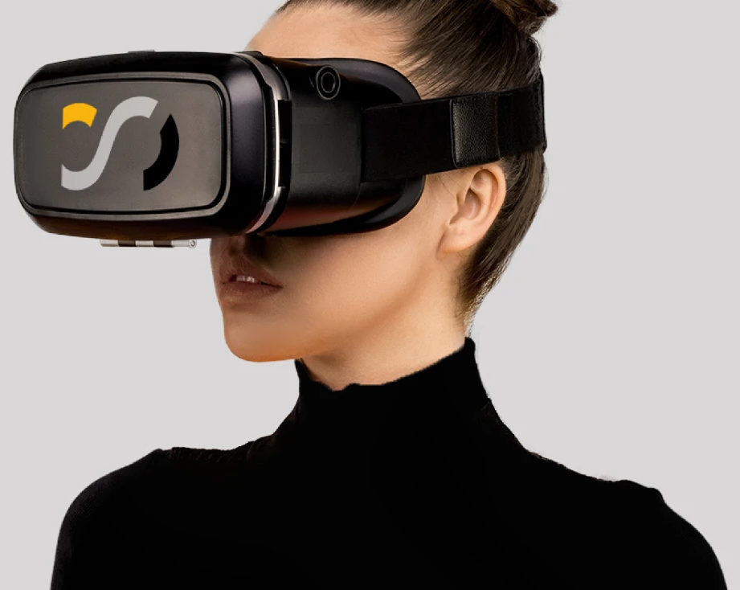

SISDEVA: sistema digital de evaluación y asistencia
Sistema diseñado para mejorar la comunicación entre personal sanitario y paciente, apoyándose en la realidad virtual para explicar procedimientos complejos de forma comprensible.
Rol
Estudiante
Cliente
Sistema Canario de Salud
Año
2021
Equipo
Yerimay Betancourt, Javier Díaz, Paula Jubera y Ana Ramos

Por qué necesitábamos un nuevo enfoque
Contexto
Los pacientes de Parkinson reciben una valoración de la evolución de su enfermedad de una forma discontinua, solo cuando se desplazan a la consulta médica. Además, estas consultas presenciales pueden verse limitadas por cuestiones de espacio y tiempo. Sin embargo, es la única manera que disponen de recibir sus tratamientos de rehabilitación.
01
Información difícil de comprender
El lenguaje clínico dejaba al paciente sin una imagen clara de lo que iba a ocurrir.
02
Ansiedad ante el procedimiento
La incertidumbre sobre el proceso generaba miedo y peor adherencia al tratamiento.
03
Tiempo limitado en consulta
El personal sanitario no disponía de tiempo suficiente para explicarlo todo en detalle.
Enseñar en lugar de explicar
Enfoque
[Placeholder] En vez de añadir más material informativo, apostamos por la realidad virtual para que el paciente pudiera ver y recorrer el procedimiento antes de vivirlo, reduciendo la distancia entre el lenguaje clínico y su experiencia real.
Funcionalidades
entregadas
-
01
Experiencia inmersiva guiada
[Placeholder] Recorrido en realidad virtual que muestra paso a paso el procedimiento.
-
02
Lenguaje visual accesible
[Placeholder] Sustitución del vocabulario clínico por representaciones visuales comprensibles.
-
03
Apoyo al profesional sanitario
[Placeholder] Herramienta de consulta que complementa la explicación sin alargar la visita.
Resultados
- [Placeholder] Los pacientes comprendieron mejor en qué consistía el procedimiento.
- [Placeholder] Se redujo la ansiedad previa reportada por los participantes.
- [Placeholder] El personal sanitario ganó una herramienta de apoyo en consulta.
Qué me dejó este proyecto
[Placeholder — comparte una o dos lecciones honestas del proyecto: algo que aprendiste sobre diseñar para contextos sensibles como la salud, o sobre trabajar con tecnología inmersiva al servicio de las personas y no al revés.]
Has llegado al final
Gracias por leer. ¿Quieres ver más?